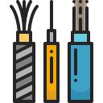
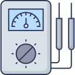

Oferta
Firma „EL-MACH” oferuje usługi w zakresie:

Monitoring
Monitoring zapewnia bezpieczeństwo posesji, mienia oraz osób przebywających na danym terenie...
W naszej ofercie znajdą państwo również tworzenie instalacji, montaż monitoringu oraz telewizji przemysłowej CCTV (Satel, BCS, Ropam, Bosch).
Systemy domofonowe
Systemy domofonowe to świetne narzędzie do identyfikacji gości oraz zdalnego otwierania drzwi lub bram...
Oferujemy również montaż innych instalacji elektrycznych jak np. domofony (Commax, Orno, MIWI-URMET itp.) lub automatyki bramowej (NICE, Hormann, FAAC, Came itp.). Zajmujemy się zarówno montażem jak i serwisowaniem oraz programowaniem urządzeń do obsługi układów elektrycznych.

Instalacje
Instalacja elektryczna musi być odpowiednio zaplanowana i wykonana, by zapewnić bezpieczne korzystanie...
z wszystkich odbiorników energii elektrycznej. W naszej ofercie nie mogło także zabraknąć zakupu, rozprowadzania oraz serwisowania wszelakich instalacji elektrycznych, zarówno natynkowych jak i podtynkowych.

Podłączanie urządzeń AGD
Wielu osobom wydaje się, że podłączenie domowych urządzeń RTV oraz AGD to proste zadanie...
Niestety, nie jest to prawda. Mianowicie instalacja elektroniki to bardzo ważny proces stanowiący nie tylko o jej prawidłowym działaniu, ale przede wszystkim wpływający na bezpieczeństwo użytkowania. Oferujemy również podłączanie urządzeń AGD takich jak: płyty indukcyjne, piekarniki, instalacje centralnego odkurzania, instalacje inteligentnego budynku( F&Home, Fibaro, KNX), instalacje teletechnicznych (Slican, Panasonic, Platan) i wiele innych.
Systemy alarmowe
Zestaw alarmowy służy do zwiększenia bezpieczeństwa danego obiektu - domu, biura, serwerowni...
czy budynku o charakterze przemysłowym. System alarmowy odstrasza złodzieja, woła o pomoc i ostrzega właściciela: wyje, piszczy i świeci lub bezgłośnie przesyła informacje o zagrożeniu. Dzięki niemu firma monitorująca może chronić dom i posesję, a czworonożny stróż spać spokojnie.
Co to jest system alarmowy?
Składa się z rozmieszczonych w kilku miejscach czujek, centrali alarmowej, manipulatora i sygnalizatora.

Pomiary elektryczne
Pomiary elektryczne to obowiązek ustawowy, który ciąży na właścicielu czy zarządcy każdego obiektu budowlanego...
Kontrola jest kwestią bezpieczeństwa i nie może być zaniedbywana. Wykonujemy pomiary elektryczne odbiorcze, okresowe, specjalistyczne. Do najważniejszych Parametrów należą Pomiary:
rezystancji izolacji,
wyłączników różnicowoprądowych,
skuteczności samoczynnego wyłączenia zasilania,
impedancji pętli zwarcia,
rezystancji połączeń ochronnych i wyrównawczych,
natężenia oświetlenia,
rezystywności gruntu.
rezystancji uziemienia,
rezystancji izolacji,
wyłączników różnicowoprądowych,
skuteczności samoczynnego wyłączenia zasilania,
impedancji pętli zwarcia,
rezystancji połączeń ochronnych i wyrównawczych,
natężenia oświetlenia,
rezystywności gruntu.
rezystancji uziemienia,
Naszą firmę wyróżnia kompleksowe podejście do wykonywanych usług w tym:
Szybkie i profesjonalne wykonanie instalacji
Fachowe doradztwo, aby instalacja spełniała wymogi i ułatwiała eksploatację
Dobór rozdzielni i zabezpieczeń
Sprawdzenie instalacji „pod napięciem”, opis rozdzielni i dokumentacja fotograficzna.
Pełna dokumentacja do odbioru w ZE i nadzorze budowlanym, szczegółowe rozliczenie materiału
Montaż wyłączników, gniazd, lamp, aparatury sterującej
Montaż, programowanie i uruchomienie systemów . Instruktaż i szkolenie użytkowników
Serwis gwarancyjny i pogwarancyjny, usuwanie usterek, remonty
Wycena gratis
Szybkie i profesjonalne wykonanie instalacji
Fachowe doradztwo, aby instalacja spełniała wymogi i ułatwiała eksploatację
Dobór rozdzielni i zabezpieczeń
Sprawdzenie instalacji „pod napięciem”, opis rozdzielni i dokumentacja fotograficzna.
Pełna dokumentacja do odbioru w ZE i nadzorze budowlanym, szczegółowe rozliczenie materiału
Montaż wyłączników, gniazd, lamp, aparatury sterującej
Montaż, programowanie i uruchomienie systemów . Instruktaż i szkolenie użytkowników
Serwis gwarancyjny i pogwarancyjny, usuwanie usterek, remonty
Wycena gratis